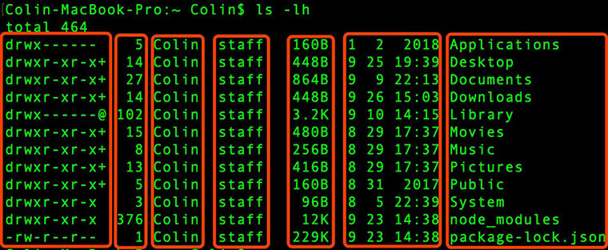

查看文件目录
| 命令 | 说明 |
|---|---|
cd [dir] |
切换到指定目录 |
ls [-options] [dir,file] |
查看指定目录所有内容 |
tree [-options] [dir] |
可以以树状图方式展示目录内容(层级子目录及文件) |
pwd [-options] |
打印当前工作目录 |
cat [-options] [file] |
查看文件内容/创建文件/文件合并/追加文件内容等 |
more [-options] file |
分页显示文件内容 |
1. cd 命令
# 命令格式
$ cd [dir]
cd是change directory缩写，其功能为改变当前工作目录。
| 命令 | 含义 |
|---|---|
cd |
切换到当前用户主目录(/home/username) |
cd ~ |
切换到当前用户主目录(/home/username) |
cd . |
保持当前目录不变 |
cd .. |
切换到上级目录 |
cd - |
在上次目录和当前目录来换切换 |
2. ls 命令
# 命令格式
$ ls [-options] [dir,file]
ls是list缩写，其功能为列出目录的内容(文件及子目录)，类似于Dos的dir命令
2.1 options
| options | 含义 |
|---|---|
-a |
显示目录下 所有 子目录与文件，包含隐藏文件 |
-l |
以列表方式显示文件的详细信息 |
-h |
配合-l以人性化的方式显示 文件大小,-h 单独使用没有效果 |
注：options可以叠加使用且顺序无关。
# 以下所有命令等价
$ ls -a -l -h
$ ls -l -h -a
$ ls -alh
$ ls -lha
2.2 parameter
- parameter可以为文件或目录。parameter为目录则列出给定目录下的内容，parameter为文件名则列出给定文件。
- parameter可以使用通配符进行模糊匹配。模糊匹配结果为多个时会列出匹配的所有文件和目录。通配符使用方式与正则类似。
| 通配符 | 含义 |
|---|---|
* |
任意多个任意字符 |
? |
一个任意字符 |
[] |
匹配字符组中任意一个。[1,2,3]等价于[1-3],[a,b,c]等价于[a-c] |
$ ls colin* # 匹配 以colin开头
$ ls colin? # 匹配 以colin+单个字符
$ ls colin[1-3] # 匹配 colin1,colin2,colin3
2.3 ls -l 内容详解

如上图所示，各列依次为 权限 | 硬链接数 | 所有者 | 所在组 | 文件尺寸 | 修改时间 | 名称
1) 权限
权限列共有10个字符组成，其含义如下：
| 类别 | 所有者权限 | 所在组权限 | 其他组权限 | ||||||
|---|---|---|---|---|---|---|---|---|---|
| d (目录) | r | w | x | r | - | x | r | - | x |
| - (普通文件) | r | w | - | r | - | - | r | - | - |
- 第一列文件类型速查表如下(仅供查阅)，其中d (目录),- (普通文件)最为常见：
| 标识符 | 含义 |
|---|---|
d |
目录 |
- |
普通文件 |
b |
块特殊文件 |
c |
字符特殊文件 |
l |
软链接文件。软链接文件名列格式为: 链接名 -> 源文件地址 |
p |
先进先出（FIFO）的管道特殊文件 |
s |
本地套接字 |
- 每组权限三列依次为 读|写|执行。
r表示可读;w表示可写;x表示可执行;-表示无对应权限
关于权限的详细信息参阅 权限管理
2) 硬链接数
关于硬链接数，可参阅 硬链接数
3. tree 命令
# 命令格式
$ tree [-options] [dir]
tree可以以树状图方式展示目录内容(层级子目录及文件)- 系统若没有安装
tree命令，可以通过sudo apt install tree来进行安装。
| options | 含义 |
|---|---|
-d |
限制只显示目录，忽略文件 |
# 显示当前目录树状图
$ tree
# 显示～/Desktop 的目录树状结构
$ tree -d ~/Desktop
4. cat 命令
# 命令格式
$ cat [-options] [file]
cat是Concatenate缩写，其功能包含查看文件内容、创建文件、文件合并、追加文件内容等。其中最常用来查看文本文件内容。
cat会一次显示所有内容，适合 查看内容较少 的文本文件
| options | 含义 |
|---|---|
-b |
显示非空行号,空行也显示但不编行号,可以用于统计有效代码行数 |
-n |
显示所有行号 |
nl file与cat -b file效果相同，都可以查看文本文件内容并显示非空行号
5. more 命令
# 命令格式
$ more [-options] file
more命令可以用于分屏显示文本文件内容，每次只显示一页内容more适合于 查看内容较多 的文本文件- 使用
more查看文件时常用操作键：
| 操作键 | 功能 |
|---|---|
Blank |
下一屏 |
Enter |
下一行 |
b |
上一屏 |
q |
退出 |
/keyword |
搜索关键字 |